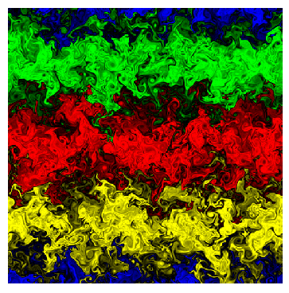

Next: About this document ...
Instructors: Geoff Vallis. ( gkv@princeton.edu) Isaac Held ( ih@gfdl.gov)
The large-scale flows in the atmosphere and ocean are often characterized as `turbulent' but, because of the importance of rotation and stratification, these flows have many features that distinguish them from three-dimensional turbulence. This course presents the theory of such `geostrophic' turbulence, developing a sequence of idealized models ranging from the two-dimensional flow of a homogeneous incompressible fluid to rotating, stratified turbulence in the presence of environmental temperature and vorticity gradients. Connections will be made with observations and with the problem of numerical modeling of the atmosphere and oceans, and there will be opportunities to run numerical models of turbulence, such as the one producing this figure:

Prerequisites: Some knowledge of fluid mechanics, equivalent to an undergraduate course. For AOS students, AOS 571 and 572 or equivalent. However, the course will be self-contained and can also be used by physics, astronomy, engineering, or mathematics students as an intensive introduction both to aspects of turbulence and to atmospheric and oceanic dynamics.
When: Tuesday and Thursday, from 9:00 to 10:30 am. 154 Guyot Hall. First lecture on September 16.
If you think you are likely to come to the first lecture or take the class, please send me an email (gkv@princeton.edu) --- even if you think I already know you are coming --- so we have some idea of numbers and who the audience is.
Vorticity, circulation. Homogeneous turbulence in three dimensions. Kolmogorov theory, inertial ranges.
Two-dimensional turbulence. Conservation properties. Inertial range theory. Batchelors similarity arguments. Tracer transport.
Statistical mechanics of two dimensional turbulence. (Elementary theory based on energy-enstrophy arguments only.)
Beta-plane turbulence and inhibition of inverse cascade. Formation of jets.
Stratified, quasi-geostrophic turbulence. Classical picture. Analogies to 2D turbulence. Charney theory of QG turbulence. Role of potential vorticity. Baroclinic Jets.
Inhomogeneous geostrophic turbulence. Interaction of eddies and jets.
Application to the atmosphere. Transfer (Green-Stone) theory. Mid-latitude baroclinic eddies. Storm-tracks.
Application to the ocean. PV homogenization in gyres. Parameterization
schemes.
There are no textbooks that cover the course material, and we don't recommend that you buy any of the following unless you are particularly interested. However, the following cover various aspects of the course:
Frisch, U. Turbulence: the legacy of A.N. Kolmogorov. c. 1995.
This book covers the theory and phenomenology of (mostly) three-dimensional
turbulence, going into more detail than will we about the basic theory.
Chapter 7 on phenomenology is most relevant. The book is generally clear,
with a personal style that some (but not all) will like.
Salmon, R.S. Lectures on geophysical fluid dynamics. 1999.
The chapter on vorticity and turbulence and geostrophic turbulence are
probably the closest of any book to the topics we will cover, particularly
in the first half of the course. Elsewhere the book offers an insightful
tour of aspects of GFD, especially oceanic fluid dynamics.
Lesieur, M. Turbulence in Fluids. (2nd Edition). c. 1995
This is complementary to the Frisch book in the ground it covers. It has
more emphasis on 'closure theory' than does Frisch, and a little more on
two-dimensional and geostrophic turbulence. Unfortunately, it is very expensive.
Monin and Yaglom. Statistical Fluid Dynamics. 1965 (Russian)
and 1971 (English) with later printings.
An encyclopaedic tour of the subject. This is the ultimate reference, and is generally very clearly written. However,
it can be very easy to lose sight of the forest for the trees, or at least
that was my experience.
Tennekes H. and Lumley, J. Turbulence.
The classic introduction to the subject. One thinks that it is elementary,
but really it is very a thoughtful book.
Kraichnan, R. H. and Montgomery. 1980 Two dimensional turbulence.
This is probably the most complete reference for two-dimensional turbulence,
containing a wealth of specialized material off to one side of and beyond
this course.
Vallis, G. K. 1993. Problems and phenomenology in two-dimensional turbulence.
In 'Nonlinear Phenomena in Atmospheric and Oceanic Science. ed. G. Carnevale
and R. Pierrehumbert. Springer-Verlag
This is less deep and more informal and phenomenological that Kraichnan
and Montgomery's article, and concentrates a little more on more recent
developments.
Rhines, P.B. 1977. Waves and unsteady currents. in 'The Sea,' ed. C.
Goldberg.
If you like James Joyce, you will like Rhines' articles.
To be added.


Next: About
this document ...